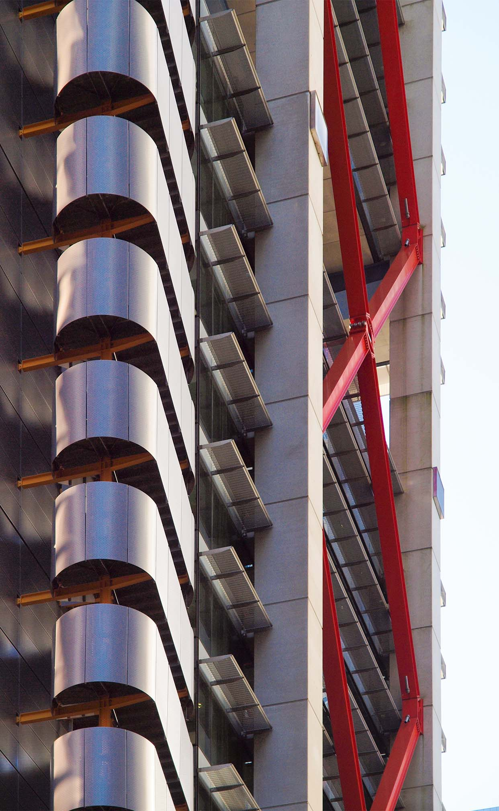
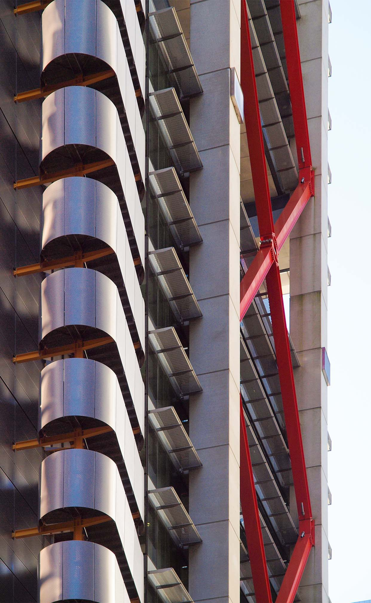
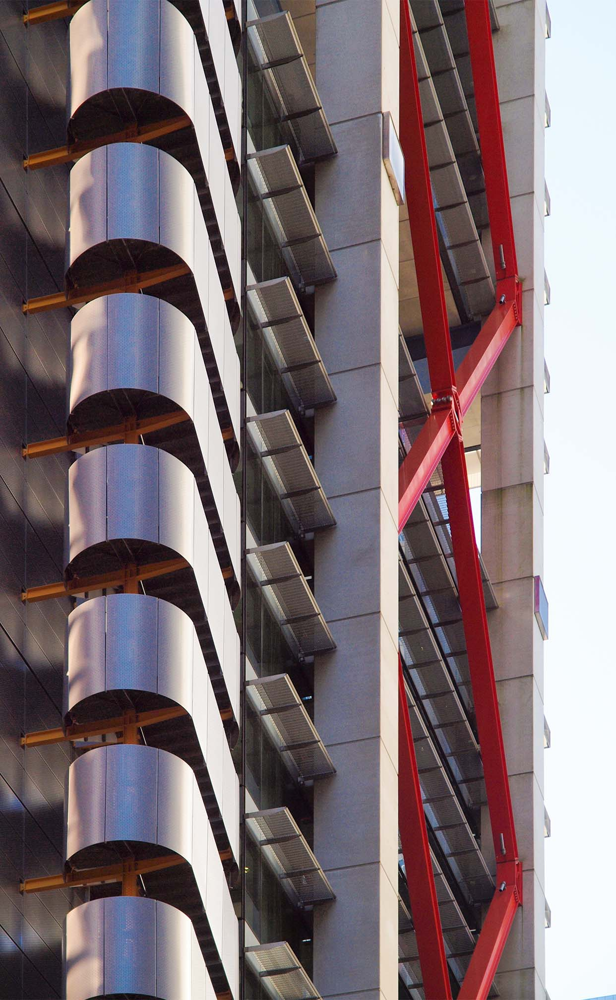

exhibition


details
 


This exploration tries to deconstruct the effect architectural facades have on urban space. It also raises the question, how much effect there even is. Every collage consists out of multiple pictures of the chosen buildings taken from different angles. Based on David Hockney’s collages from the 90’s, the individual pictures are then assembled to form a more complete image of each building. By using different positions, angles and focal lengths, the final collage is rich in detail and gives a more three-dimensional feeling to the viewer. The exhibition compares two suburbs, Newtown and the central business district, of Sydney, Australia. While Newtown mostly consists of two- or three-story high buildings from the late 19th century, the CBD is known for its high rises from the 20th and 21st century. The choice of the buildings mostly reflects personal interest as well as diversity in architecture and facades. Along the architectural facade, scenes on the streets are also captured and included in the collage, which allows for a deeper understanding of the urban space. The combination of capturing architecture in multiple settings with the digital process of rearranging the images on a canvas lets one see and appreciate architecture from a different perspective.
